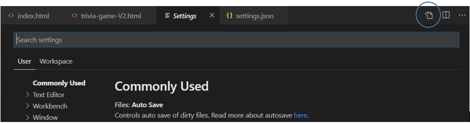
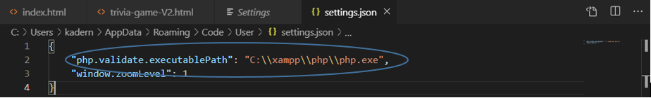

Setting Up Debugging in PHP (w VS Code)
I used this page as my guide.
Setting Up XDebug
- Open this page in our browser
- Copy the entire contents of the HTML in the page.
-
Go to this page and paste the clipboard contents into the textarea.
Then press the 'analyze' button.
-
Follow the instructions output.
Note that the instructions did not tell me to set add these settings to the php.ini as well:
xdebug.remote_autostart = 1
xdebug.remote_enable = 1
Install the PHP Debug Plugin into VS Code
- In VS Code, press the 'Extensions' button (it's the icon on the left side that has 4 little boxes, and one of them is slightly separated from the others).
- The Extensions side bar will appear on the left.
- In the search box, enter PHP Debug. Go ahead and install it (press the 'Install' button).
- You may be prompted to restart VS code. If so, then do it.
- When VS Code restarts, click on File > Preferences > Settings
-
Then click on the little icon in the upper right that will show the code (JSON) for the VSCode settings

-
Add this entry (between the curly braces) to the user settings:
"php.validate.executablePath": "C:\\xampp\\php\\php.exe"
You may, or may not, have other settings in the JSON code.
Note that each line within the curly braces should end with a comma, except for the last one.

Note, I got a warning saying that the settings could not be validated! But I ignored it, and everything worked.
Using the Debugger
- Open the page you want to debug in the browser
- Open the page in VS Code
- Press the Debug icon on the left. This will open the Debug window on the left.
- Set a break point by clicking to the left of a line number.
-
Press the debug button (green arrow) on the top left
(you'll want to use the 'Listen for XDebug' run configuration, but that should be selected by default).
- Go back to the browser and refresh the page, it should stop executing at your break point
- Go back to VS code and use the debugger to step through it.